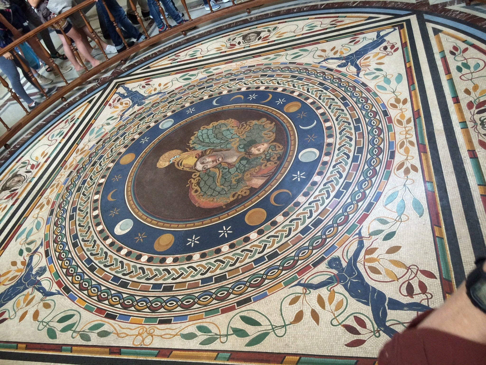
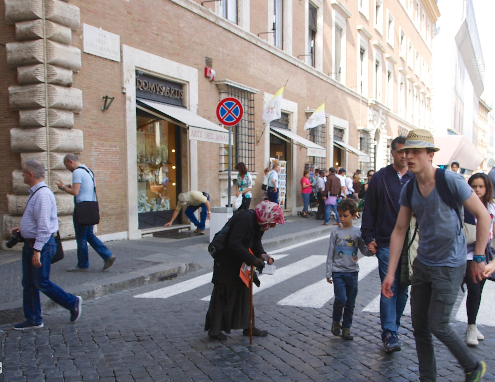

Mark Elster
Historic Reflections 5-2
The itinerary, day 5, part 2
Vatican City, Sistine Chapel, & St. Peter’s
The crowds were almost suffocating. The combination of Easter week, and the coming cannonization of John XXIII and John Paul II had increased the normal deluge to epic proportions. Sabrina was informative, entertaining, and strategic in navigating almost all of us through the throngs of visitors (one sour older couple were shocked, shocked I say, to have to walk so much on a walking tour that clearly advertised extensive walking, and bailed out of the tour less than halfway through!—none of us missed their constant grumbling).
In addition to his masterful design of the dome, Michelangelo’s Pietà, depicting a dead Christ cradled in the lap of the mourning Virgin Mary, was moved to a side Chapel about 200 years after he died. It is the only work he ever signed, purportedly because he was offended when early viewers mistakenly attributed it to another artist—carving MICHAELA[N]GELUS BONAROTUS FLORENTIN[US] FACIEBA[T] (Michelangelo Buonarroti, Florentine, made this) on the sash running across Mary’s chest. Sadly the Pietà is now kept under bulletproof glass due to the 1972 hammer attack by a deranged zealot while shouting, "I am Jesus Christ!"
Our attention was drawn to a denser part of the circulating crowd in front of us where we found the weirdly mummified remains of an earlier pope under glass—it looked like a wax dummy—with a nice little chair nearby for you sit down and chat with him.

After another somewhat rushed circuit of perhaps half the sights to be seen within the basilica, we are ushered out through the crush of people back out to the front steps of the Narthex and the expansive view of St. Peter’s Square (Piazza San Pietro) then past a Swiss Guard standing outside his ticky–tacky plastic hut, and rank upon rank of chairs set up for some of the expected 100,000 spectators anticipated for the coming canonization ceremony and Easter services.

After 20 minutes rapt reverence in the chapel on radio silence, Sabrina switched on, and ushered us into the basilica. Words fail to do justice to the shock one feels at the immensity of the truly colossal and luminous spaces! The letters on the entablature are 80 feet above and each 7 feet tall! The Baldacchino seen in the distance appears to be rather diminutive at 98 feet tall! Please note the dumbstruck, slack–jawed looks on our faces in this shot snapped by Gavin.
Gian Lorenzo Bernini’s baroque masterpiece, the Baldacchino di San Pietro, a bronze canopy sheltering the tomb or crypt of St. Peter himself* is a veritable riot of detail and exuberant decoration that literally stretches heavenward under sunbeams (known as crepuscular light) winking through the drum windows of the dome and the lantern above.
*The Catholic church is infamous for unsupported and often conflicting claims of the provenance of so–called relics, this particular claim having more substance than most—there is no doubt that Peter was a historical figure and that he died in Rome.
*The Catholic church is infamous for unsupported and often conflicting claims of the provenance of so–called relics, this particular claim having more substance than most—there is no doubt that Peter was a historical figure and that he died in Rome.

According to our guide, the Egyptian obelisk at the center of the ovato tondo (the elliptical forecourt of the piazza) is 41 meters tall (including the base) and over 4,400 year old. It was moved from Nero’s Circus where St. Peter had been crucified as a symbolic witness to his martyrdom. The two fountains are at the foci of the ellipse.
We learned that the first pope to commission a new St. Peter’s was also responsible for ordering the salvage of stone from another pagan edifice he ordered demolished—the Coliseum! Over 2,200 cartloads of stone were pilfered. The work was funded largely by the sales of indulgences, which subsequently led to Martin Luther’s revolt and the reformation.
The grandeur of the Piazza is a sight to behold, but as an architect I would expect that Bernini was frustrated by the lack of a master plan for the Vatican—the haphazardly arranged and rather pedestrian papal apartments and other offices that unceremoniously loom over the Basilica and his collonnaded ovato tondo despoil the scene. In particular, they distract from the clever forced perspective and scale devices employed by both Bernini and Michelangelo (and Maderno), actually making St. Peter’s look smaller than the intended effect by allowing unwanted visual scale comparisons. On the brighter side, the difficulties introduced by these existing structures clearly contributed to Bernini’s masterful design and the unique geometry of the layout for the piazza, doing his best to mitigate the problem.
The grandeur of the Piazza is a sight to behold, but as an architect I would expect that Bernini was frustrated by the lack of a master plan for the Vatican—the haphazardly arranged and rather pedestrian papal apartments and other offices that unceremoniously loom over the Basilica and his collonnaded ovato tondo despoil the scene. In particular, they distract from the clever forced perspective and scale devices employed by both Bernini and Michelangelo (and Maderno), actually making St. Peter’s look smaller than the intended effect by allowing unwanted visual scale comparisons. On the brighter side, the difficulties introduced by these existing structures clearly contributed to Bernini’s masterful design and the unique geometry of the layout for the piazza, doing his best to mitigate the problem.
I managed to snap several illicit photos of the Sistine Chapel frescos whilst we were herded like cattle in a slowly rotating procession through the space. Photography is prohibited under the pretext of preserving the art (which would logically only preclude flash), to display proper reverence, and to avoid disturbance (and to compell the purchase of sanctioned photography in the gift shop). [I believe that you ought to be rightfully entitled to photograph, for personal use, anything you are allowed to see with your own eyes]. All while the stern priest–overseers too–frequently barked to the quietly whispering horde, "NO TALKING!" Pretty sure I know who was more disruptive and discordantly out of place!

While cued up for our bus we spotted a wretched old crone painfully shuffling down the street with an outstretched gnarled hand in the clichéd "Alms for the poor" universal body language of beggars. Something seemed off—perhaps she was a little too perfectly bent, and picturesque, so we watched her slow progress with growing interest eventually realizing "she" was in fact a young man in costume playing a con on gullible tourist marks. Once he noticed our unwanted attention he skeddadled, suddenly quite spry, handing off his bag of spoils to his conspirator just as the next "old crone" emerged from an alley to take his place! Thus ended our day in Rome and the Vatican City.
Hopping back on the bus at Piazza del Pòpulo we wheeled past the closed Coliseum (darned Roman holidays!) we were shortly dropped in a narrow lot alongside the Vatican citadel wall (about 50 feet, or 15 meters tall) where we were introduced by Simone to our Vatican guide, Sabrina, who referred to us as "my group". They both warned us to proceed on foot single file because the sidewalks are narrow. They warn’t kiddin'! About 30 meters along, the "sidewalk" narrowed to less than 25 cm (10")! along an extremely busy main arterial filled with crazy Italian bus-drivers bombing past our tucked elbows at 40 mph!
As we wended our way ever deeper into the sprawling Vatican (our guides with their green flag and radios were indispensable), every corner produced new wonders. Mosaics on the floor, coffering on the ceiling, frescoes on the walls and vaults, immense tapestries hung in the corridors, grand stare cases, and everywhere, sumptuous statuary.
As we wended our way ever deeper into the sprawling Vatican (our guides with their green flag and radios were indispensable), every corner produced new wonders. Mosaics on the floor, coffering on the ceiling, frescoes on the walls and vaults, immense tapestries hung in the corridors, grand stare cases, and everywhere, sumptuous statuary.